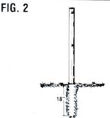
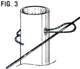

A 45-Minute Fence
When it's time to put animals out to pasture, this reader solves quick enclosure problems, including diagrams and directions.
By Linda Fairbanks
March/April 1981
When it's time to put the animals out to pasture, this reader solves "quick enclosure" problems with...
By Linda Fairbanks
Not counting the time it took me to get organized, I fan average housewife sort of person) built a 750-foot horse- and cattletight fence in just 45 minutes. And the labor involved was about as strenuous as a leisurely stroll!
As you might have guessed, the inspiration for my fast fence was born of necessity. I needed to keep my stock away from the garden, and-with the cost of fencing higher than ever-I planned to use electric wire. (Of course, the fact that I already owned a "bought used" $18 fence charger had something to do with my choice of material! ) Even "hot" wire has to be held up with posts. though ... and good fence poles can cost a small fortune!
So I decided. to make my wire supports of 1" PVC water pipe. I bought the conduit in 20-foot lengths and cut each of these into four 5-foot sections.
My next step was to determine how far apart to position the wires. Then I drilled two small holes-completely through each pipe-at the correct intervals. Once this preliminary work was done-and all my tools and materials were organized-the job was really easy.
I used a string to make sure that the route for my proposed fence was straight, and simply stepped off approximately ten feet for each post, dropping the plastic tubes in position as I went along. In order to assure a solid fence, I installed wooden supports at the corners.
That done. I got out the water hose ... turned on the pressure put the end of the hose in the ground and began to "drill" (Fig. 1). If your water pressure is good and your soil isn't too rocky, this job will go very quickly. In our sandy loam, for instance, I was able to drill 18 inches (the depth I wanted to sink my posts) in less than ten seconds. As soon as a hole was drilled, I just pushed in the length of PVC (Fig. 2) and adjusted its height. EDITOR'S NOTE: Be sure to test the water drilling method in your own soil before you invest in the components for this kind offence.]
With all the poles set, I attached the wire to my solid wood corner posts-with insulators-and laid the metal strand out . . . all the way around the to-béenclosed area. Next, I took 6" pieces of electric wire . . . bent them in half . . put the bend of each of these fasteners over the fence wire... ran the ends through a hole in one of my posts . . . and crimped the tips-in opposite directions-on the back of the pipe (Fig. 3). No insulators were needed on the PVC posts-since the plastic material is nonconductive-so all that remained was to hook up the electricity (Fig. 4).
I've used such a fence for horses and cattle for over a year now, and found it very satisfactory. In fact, my "instant corral" is ,so easy to construct that I've even moved it several times And, I'm happy to say, the plastic posts have worked as well as more conventional uprights would have. I don't want to brag ... but I think my quick-and-easy enclosure is the best fence going!
 |
 |
 |
 |
|
|